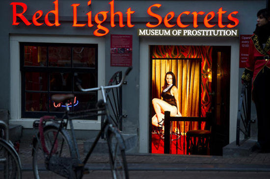
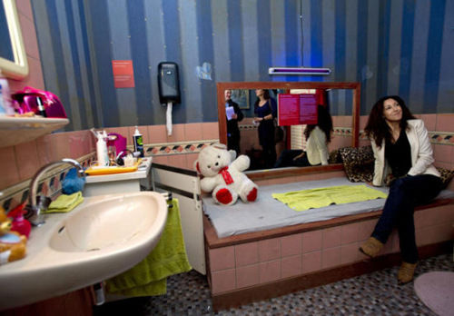
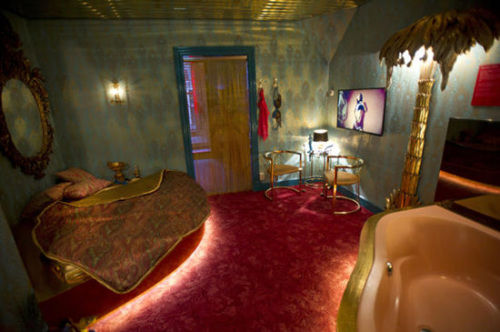
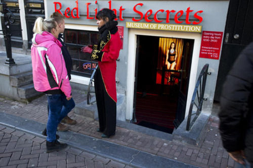

新闻 | 荷兰首开卖淫博物馆：呼吁尊重性工作者

性都阿姆斯特丹红灯区近日新开了一家卖淫博物馆，揭开性工作者生活的神秘面纱。
据外媒消息，荷兰阿姆斯特丹的“红灯区”举世闻名，一直是重要的观光景点。近日，一个名为“红灯区秘密”的博物馆在当地开放，展示那些“橱窗女郎”们的日常生活。

展现性工作者日常生活的浴室极富生活情趣
博物馆位于阿姆斯特丹市中心繁华地带，外观看上去就是一间普通的当地建筑。博物馆内部装饰豪华，改造前是一个货真价实的妓院。博物馆的管理者表示，这个场所是为那些想一探究竟但又不想“消费”的人们而建。

博物馆经过改造设施豪华，展示最真实的生活空间
游人进入博物馆时，由一名全息投影的“橱窗女郎”做简介。博物馆里的陈列就如一个真实的生活空间，还有短片介绍靠这个行业生活的其他人，包括清洁工、修理工，专人洗衣等。

任何人都受到欢迎，博物馆为那些想一探究竟的人们提供了便利
阿姆斯特丹“红灯区”始于16世纪，而博物馆展示的仅是2000年以后的年代，当时荷兰的卖淫行业就此合法化。
参观者可以在这里了解性工者的各种工作场所，从橱窗后简陋的房间、到高级女性性工作者工作的豪华套间、再到为特殊爱好顾客准备的SM工作间。博物馆还提供阿姆斯特丹红灯区的历史介绍，馆内循环播放的纪录片展现了阿姆斯特丹红灯区内日常生活的细节。博物馆的筹建者称，希望籍此展现性工作者的真实生活状况，让人们在满足好奇心之余也意识到性工作者也是普通人、也是辛勤工作的劳动者。博物馆的筹建也受到了阿姆斯特丹市政府和性工作者权益组织Geisha基金会的支持。
【夕颜声音】在许多国家性工作是一份合法的工作。性工作者的各种人身权利，以及职业、安全和健康都能得到有效地保障。事实上，一些国家的性工作的不合法，给性工作者的生存和工作带来的极大地挑战。
小伙伴们是怎样看待性工作的呢？
欢迎留言：主题#我谈性工作#+你的观点
跟我们互动呀！
【关于我们】
深圳夕颜倡导多元和平等文化，建设同志及跨性别友善的社会，关心同志MSM/MB的健康和安全，致力倡导不歧视性的工作和生活环境。
深圳夕颜现已开通了主页、QQ、微信、微博、飞赞等方式。
1.网址：http://www.xiyan.info
2.电邮：sz.xiyan@gmail.com
3.QQ：1257645143
4.新浪微博：@深圳夕颜 http://weibo.com/xiyansz
5.官方微信：搜索”xiyaninfo“ → 添加好友。或直接扫描底部的二维码。
欢迎各位小主留言给我们的公众账号，可以跟主页君聊(tiǎo)天(xì)、咨询性艾知识以及相关法律法规等等。

我是深圳夕颜的二维码，快来扫我呀！